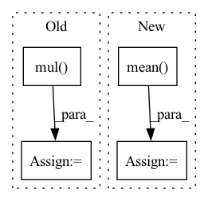

Pattern ID :22551
Before Change
all_users, all_items = self.compute_embedding()
users_emb = all_users[users]
items_emb = all_items[items]
inner_pro = torch.mul( users_emb, items_emb)
gamma = torch.sum(inner_pro, dim=1)
return gamma
def predict(self, interaction):After Change
all_embeddings = torch.sparse.mm(self.norm_adj_matrix, all_embeddings)
embeddings_list.append(all_embeddings)
lightgcn_all_embeddings = torch.stack(embeddings_list, dim=1)
lightgcn_all_embeddings = torch.mean( lightgcn_all_embeddings, dim=1)
user_all_embeddings, item_all_embeddings = torch.split(lightgcn_all_embeddings, [self.n_users, self.n_items])
return user_all_embeddings, item_all_embeddings
def calculate_loss(self, interaction):In pattern: SUPERPATTERN
Frequency: 3
Non-data size: 4
Instances Fragment ID: 71218681
Project Name: rucaibox/recbole
Commit Name: 210deb20fdbedae80baa4e808ed08326a696027f
Time: 2020-09-12
Author: 2015201909@ruc.edu.cn
File Name: recbox/model/general_recommender/lightgcn.py
M Class Name: LightGCN
N Class Name: LightGCN
M Method Name: forward(1)
N Method Name: forward(3)
M Parent Class: GeneralRecommender
N Parent Class: GeneralRecommender
M File Name: recbox/model/general_recommender/lightgcn.py
N File Name: recbox/model/general_recommender/lightgcn.py
M Start Line: 140
M End Line: 147
N Start Line: 87
N End Line: 97
Before Change
// Only reconstruct the Y channel image data.
with torch.no_grad():
sr_tensor_y = model(lr_tensor_y).clamp_(0., 1.)
sr_image_y = sr_tensor_y.mul( 255.0) .cpu().numpy().squeeze(0).squeeze(0)
sr_image = np.array([sr_image_y, lr_ycbcr[..., 1], lr_ycbcr[..., 2]]).transpose([1, 2, 0])
sr_image = np.clip(imgproc.convert_ycbcr_to_rgb(sr_image), 0.0, 255.0).astype(np.uint8)
sr_image = Image.fromarray(sr_image)After Change
sr_tensor_y = model(lr_tensor_y).clamp_(0.0, 1.0)
// Cal PSNR
total_psnr += 10. * torch.log10(1. / torch.mean( (sr_tensor_y - lr_tensor_y) ** 2) )
sr_image_y = sr_tensor_y.mul_(255.0).cpu().squeeze_(0).squeeze_(0).numpy()
sr_image = np.array([sr_image_y, lr_ycbcr[..., 1], lr_ycbcr[..., 2]]).transpose([1, 2, 0]) Fragment ID: 71218678
Project Name: lornatang/srcnn-pytorch
Commit Name: b957357cc1bbc6e96762df844df48a3e6464fd90
Time: 2021-11-05
Author: liuchangyu1111@gmail.com
File Name: validate.py
M Class Name: AnonimousClass
N Class Name: AnonimousClass
M Method Name: main(0)
N Method Name: main(0)
M Parent Class:
N Parent Class:
M File Name: validate.py
N File Name: validate.py
M Start Line: 177
M End Line: 221
N Start Line: 50
N End Line: 89
Before Change
// this work at inference?
x = x.sub(self.running_mean.reshape(shape=[1, -1, 1, 1]))
x = x.mul( self.weight.reshape(shape=[1, -1, 1, 1]))
x = x.div(self.running_var.add(self.eps).reshape(shape=[1, -1, 1, 1]).sqrt())
x = x.add(self.bias.reshape(shape=[1, -1, 1, 1]))
return x
After Change
if self.track_running_stats or self.training:
batch_mean = x.mean(axis=(0,2,3))
y = (x - batch_mean.reshape(shape=[1, -1, 1, 1]))
batch_var = (y*y).mean(axis=(0,2,3))
if self.track_running_stats:
self.running_mean = (1 - self.momentum) * self.running_mean + self.momentum * batch_mean
self.running_var = (1 - self.momentum) * self.running_var + self.momentum * batch_var Fragment ID: 71218676
Project Name: geohot/tinygrad
Commit Name: ffb96b2d0b5f34a0acb63af0312871fd532138f4
Time: 2020-12-09
Author: geohot@gmail.com
File Name: tinygrad/nn.py
M Class Name: BatchNorm2D
N Class Name: BatchNorm2D
M Method Name: __call__(2)
N Method Name: __call__(2)
M Parent Class:
N Parent Class:
M File Name: tinygrad/nn.py
N File Name: tinygrad/nn.py
M Start Line: 21
M End Line: 25
N Start Line: 18
N End Line: 31